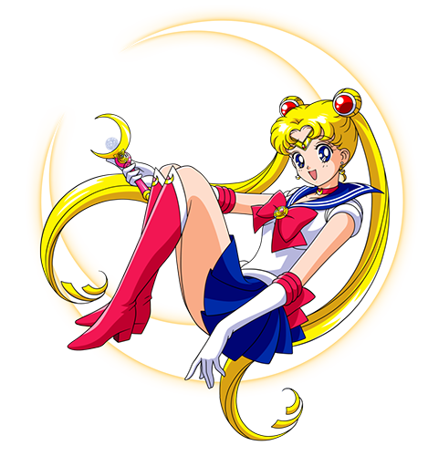
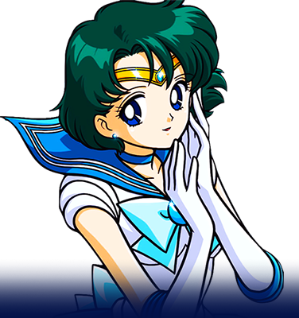

Ella es Usagi Tsukino una niña llorona que va en segundo de Secundaria; le gusta comer todo tipo de postres, leer comics y pasarse horas frente a los videojuegos. Le gusta coleccionar cosas de conejos, le disgustan las matemáticas, el inglés y los exámenes sorpresa, en general es muy mala estudiante. Le tiene miedo a los dentistas y a los fantasmas. De carácter torpe e inocente, a Serena le gusta emprender cosas nuevas y esforzarse en lo que hace, aunque no siempre le salgan bien. Vive con sus padres Ikuko y Kenji y con su hermano menor Sammy, su única amiga es Molly. Es gran fanática de Sailor V y sueña con llegar a ser como ella, al principio le atrae Andrew y le disgusta Darien porque siempre la molesta.
Sailor Mercury es la identidad de Ami como Sailor Scout. Proviene del planeta Mercurio y lleva un uniforme con falda de color azul y moños celestes. Sailor Mercury es una de las ocho guerreras que siguen a Sailor Moon, la protagonista. También es, junto a Sailor Mars, Sailor Jupiter y Sailor Venus una de las cuatro protectoras de Serenity, la Princesa de la Luna, desde los tiempos en que existía en la Luna un antiguo reino llamado el Milenio de Plata.


|


|